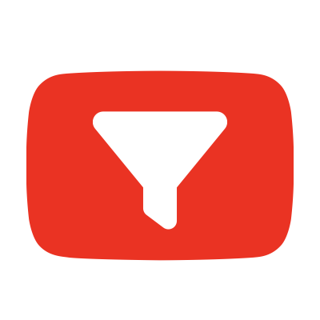
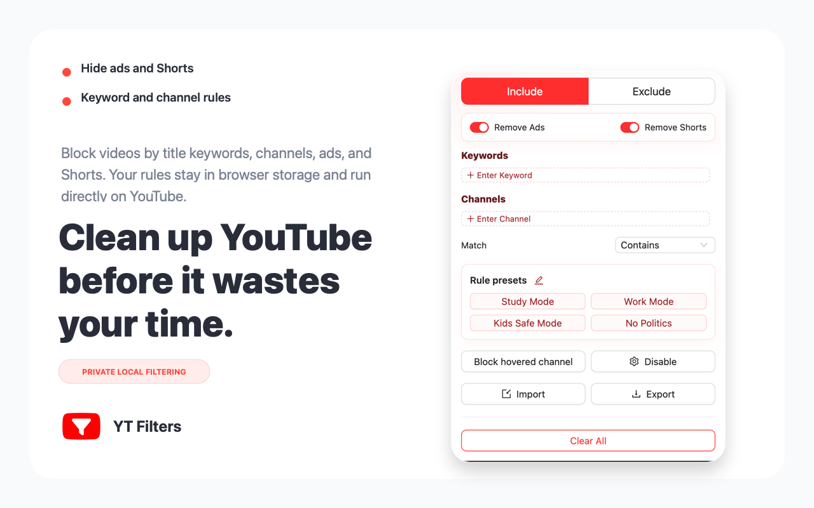

Keyword video filtering
Hide videos when their titles match topics, words, phrases or distractions you want out of sight.

Filter YouTube Video Add to ChromeChrome extension for a cleaner YouTube feed
Stop unwanted recommendations before they pull attention away. Add a keyword, block a noisy channel, hide Shorts and keep YouTube useful for study, work, parenting and focused browsing.

Built for YouTube filtering
Instead of fighting YouTube one recommendation at a time, create clear rules that keep your homepage, search results and side recommendations cleaner.
Hide videos when their titles match topics, words, phrases or distractions you want out of sight.
Block videos from channels that keep returning to your feed, even when YouTube will not let you fully block them.
Remove short-form distractions from the YouTube experience when you want a more intentional browsing session.
Create focused setups for study, work, kids-safe browsing, no politics or your own custom keyword groups.
Your filtering rules live in your browser. The product is designed around simple local control, not cloud profiling.
Install, add your first keyword or channel, open YouTube and immediately see a calmer feed.
From noisy feed to useful feed
Use YouTube for tutorials, research, music, learning or family viewing without letting unrelated recommendations take over the page.
How to use
The extension is made for people who want control without complicated setup. Install it once, then tune your rules whenever your feed gets noisy.
Click the install button and add Filter YouTube Video to Chrome in a few seconds.
Start with the topic or channel that appears too often in your YouTube feed.
Use keyword rules, channel rules, Shorts hiding and presets to shape the experience.
Open YouTube and keep learning, working or watching without constant unwanted pulls.
Who it helps
Keep tutorials and lectures visible while filtering entertainment topics during study sessions.
Reduce unwanted channels and Shorts when children use YouTube with family supervision.
Turn YouTube into a research tool instead of a recommendation loop during work hours.
User feedback
"I added one channel and two keywords. My YouTube homepage finally stopped pushing the same distracting topic every day."
Daniel R. Designer"The best part is that it feels simple. I do not need a huge productivity system, just a way to remove the videos I already know I do not want."
Priya S. Graduate student"I use YouTube for engineering tutorials. Blocking noisy channels makes search and recommendations much easier to scan."
Marcus L. Frontend engineer"Hiding Shorts changed how my kid uses YouTube. The page feels slower, calmer and much easier to manage."
Emily C. Parent"The local-rule approach matters to me. I want filtering without sending my watch habits into another dashboard."
Owen M. Founder"I added one channel and two keywords. My YouTube homepage finally stopped pushing the same distracting topic every day."
Daniel R. Designer"The best part is that it feels simple. I do not need a huge productivity system, just a way to remove the videos I already know I do not want."
Priya S. Graduate student"I use YouTube for engineering tutorials. Blocking noisy channels makes search and recommendations much easier to scan."
Marcus L. Frontend engineerFAQ
Yes. Add title keywords or phrases and the extension filters matching YouTube videos from your feed and browsing pages.
Yes. Add channel names to your rules to hide videos from channels you no longer want recommended.
Yes. You can enable Shorts hiding when you want YouTube to feel more focused and less addictive.
The extension is designed around local browser rules. Your keywords and channel filters are stored locally.
It can help with both. It is not a full parental-control system, but it is useful for reducing unwanted topics, channels and Shorts.
Ready to clean your feed?
Start with one keyword or channel and see how much calmer YouTube can feel.